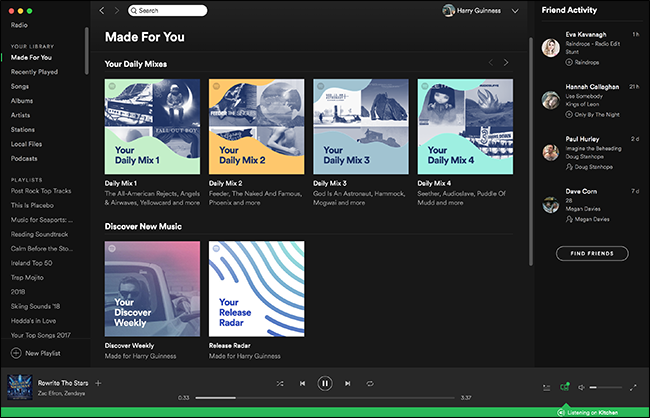
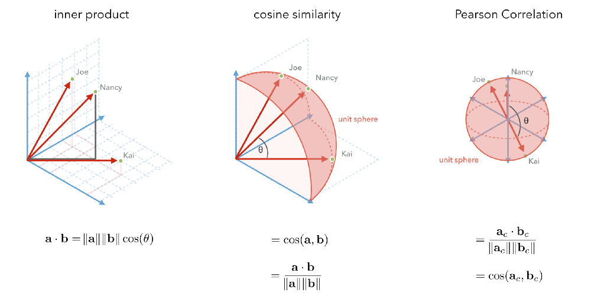
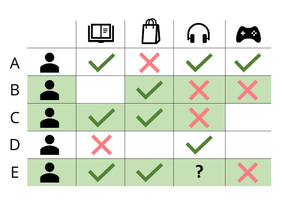
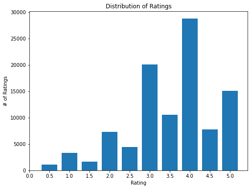
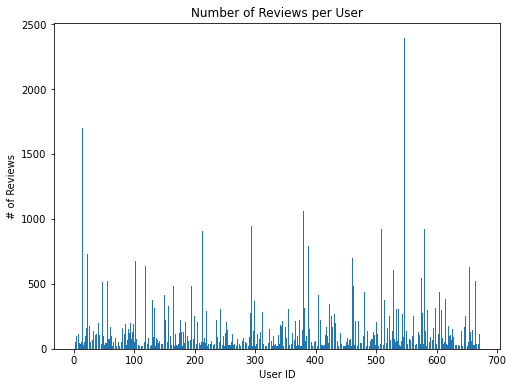
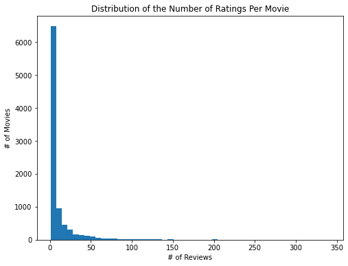

Topic 36: Recommendation Systems#
06/11/21
onl01-dtsc-022221FT
Questions:#
In this lab, we do a gridsearch to figure out how to optimize our SVD factorization, but I don’t understand why we are using KNNBasic and Baseline as well as cross-validating the data?
Additional Resources#
Surpise’s Baseline Models#
Evaluating Recommendation Systems#
Evaluating Recommendation Systems:
Recommendation Systems#
We have seen how Recommender/Recommendation Systems have played an integral parts in the success of Amazon (Books, Items), Pandora/Spotify (Music), Google (News, Search), YouTube (Videos), etc. For Amazon, these systems bring more than 30% of their total revenues. For Netflix service, 75% of movies that people watch are based on some sort of recommendation.
The goal of Recommendation Systems is to find what is likely to be of interest to the user. This enables organizations to offer a high level of personalization and customer-tailored services.
Three Main Types#
non-personalized
content-based
collaborative filtering
Non-Personalized Recommendations#
YouTube is notorious for putting non-personalized content on their homepage (although they tailor recommendations in other places)
These recommendations are based purely on the popularity of the item!
Advantages#
Super easy (computationally and for the user to understand)
Items are usually popular for a reason
No cold-start issue
Disadvantages#
Not personalized
New items won’t gain traction
Content-Based#

Content-based recommendations are based on the properties/attributes of the items, where the items you’ve rated highly (or, in Spotify’s case, listened to recently or often) are then compared against the properties/attributes of other items, and those items are then recommended if they’re considered ‘similar’.
What items are ‘similar’? Depends on your similarity metric:

Image Source: “What Similarity Metric Should You Use for Your Recommendation System? <- useful reading!
Those are just 3 examples, there are others (Jaccard index, Euclidian similarity) - but the point is you take some mathematical understanding of the items and find which ones are ‘nearby’ in some sense.
Advantages:#
Easy and transparent
No cold start issue
Recommend items to users with unique tastes
Disadvantages:#
Requires some type of tagging of items
Overspecialization to certain types of items
Collaborative Filtering#

Use both User and Item data! Use past behavior of many users (how they’ve rated many items) to find similarities either between users or between items (either user-based or item-based) to recommend new things.
We build a Utility/Rating Matrix to capture many users’ ratings of many different items - a matrix that, in practice, tends to be quite sparse (see all the blanks in just this tiny example above).
Then, we use MATH (namely, matrix factorization) to fill in those blanks, based upon similar users’ ratings of similar items.
More specifically, it finds factor matrices which result in the ratings it has - decomposing the actual Utility Matrix into component pieces that explain it. These component pieces, matrices themselves, can be thought of as ‘latent’ or ‘inherent’ features of the items and users! The math then comes in, as we calculate the dot products in order to arrive at our predicted ratings.’

A bit more on Matrix Factorization, from Google’s Recommendations Systems crash course: https://developers.google.com/machine-learning/recommendation/collaborative/matrix
Advantages:#
Personalized. You’re special!
Disadvantages:#
Can require a lot of computation, especially as these matrices get larger
Cold start: need to have a lot of ratings to be worthwhile
Popularity Bias: biased towards items that are popular. May not capture people’s unique tastes.
Matrix factorization methods include Singular Value Decomposition (SVD) and Alternating Least Squares (ALS)
I’ll note that there are differences between explicit and implicit ratings.
Explicit data is gathered from users when we ask a user to rate an item on some scale
Pros: concrete rating system, can assume users actually feel the way they input and thus can extrapolate from those preferences
Cons: not all users might input their preferences
Implicit data is gathered from users without their direct input - a system logs the actions of a user
Pros: Easier to collect automatically, thus have more data from more users without those users needing to go through extra steps
Cons: More difficult to work with - how do we know what actions imply preference?
[insert comment about y’all filling out surveys here]
And now, in code!#
Recommendation Systems with Surprise#
Reading in the data and simple EDA#
Data Source:#
https://www.kaggle.com/rounakbanik/the-movies-dataset
# Import libraries, round 1
import numpy as np
import pandas as pd
import matplotlib.pyplot as plt
from collections import Counter
# load in data and check it out
df = pd.read_csv('data/ratings.csv')
print(df.shape)
df.head(10)
(100004, 4)
| userId | movieId | rating | timestamp | |
|---|---|---|---|---|
| 0 | 1 | 31 | 2.5 | 1260759144 |
| 1 | 1 | 1029 | 3.0 | 1260759179 |
| 2 | 1 | 1061 | 3.0 | 1260759182 |
| 3 | 1 | 1129 | 2.0 | 1260759185 |
| 4 | 1 | 1172 | 4.0 | 1260759205 |
| 5 | 1 | 1263 | 2.0 | 1260759151 |
| 6 | 1 | 1287 | 2.0 | 1260759187 |
| 7 | 1 | 1293 | 2.0 | 1260759148 |
| 8 | 1 | 1339 | 3.5 | 1260759125 |
| 9 | 1 | 1343 | 2.0 | 1260759131 |
# Can also get the data straight from the surprise library we'll be using
# from surprise import Dataset
# data = Dataset.load_builtin('ml-100k')
# df = pd.read_csv('~/.surprise_data/ml-100k/ml-100k/u.data',
# sep='\t', header=None)
# df = df.rename(columns={0: 'user', 1: 'item', 2: 'rating', 3: 'timestamp'})
Ratings#
# check value_counts
ratings = df['rating'].value_counts()
ratings
4.0 28750
3.0 20064
5.0 15095
3.5 10538
4.5 7723
2.0 7271
2.5 4449
1.0 3326
1.5 1687
0.5 1101
Name: rating, dtype: int64
ratings_sorted = dict(zip(ratings.index, ratings))
# plot distribution in matplotlib
plt.figure(figsize=(8,6))
plt.bar(ratings_sorted.keys(), ratings_sorted.values(), width=.4)
plt.xticks(np.arange(0, 5.1, step=0.5))
plt.xlabel("Rating")
plt.ylabel("# of Ratings")
plt.title("Distribution of Ratings")
plt.show()

Users#
print("Number of users: ", df.userId.nunique())
print("Average Number of Reviews per User: ", df.shape[0]/df.userId.nunique())
Number of users: 671
Average Number of Reviews per User: 149.03725782414307
ratings_per_user = df['userId'].value_counts()
ratings_per_user = sorted(list(zip(ratings_per_user.index, ratings_per_user)))
plt.figure(figsize=(8,6))
plt.bar([r[0] for r in ratings_per_user], [r[1] for r in ratings_per_user])
plt.xlabel("User ID")
plt.ylabel("# of Reviews")
plt.title("Number of Reviews per User")
plt.show()

Movies#
print("Number of movies: ", df.movieId.nunique())
print("Average Number of Reviews per Movie: ", df.shape[0]/df.movieId.nunique())
Number of movies: 9066
Average Number of Reviews per Movie: 11.030664019413193
# the movie IDs with the most ratings
df['movieId'].value_counts()[:10]
356 341
296 324
318 311
593 304
260 291
480 274
2571 259
1 247
527 244
589 237
Name: movieId, dtype: int64
ratings_per_movie = df['movieId'].value_counts()
plt.figure(figsize=(8, 6))
plt.hist(ratings_per_movie, bins=50)
plt.xlabel("# of Reviews")
plt.ylabel("# of Movies")
plt.title("Distribution of the Number of Ratings Per Movie")
plt.show()

Singular Value Decomposition using Surprise#
Written by Yish, thanks <3
One of the easiest libraries to use for recommendation systems is Surprise, which stands for Simple Python Recommendation System Engine. Here, we’ll code a recommendation system using the Surprise Library’s Singular Value Decomposition (SVD) algorithm.
To read more about Surprise’s SVD implementation, and its hyperparameters: https://surprise.readthedocs.io/en/stable/matrix_factorization.html#surprise.prediction_algorithms.matrix_factorization.SVD
# If you need the surprise library
# !pip install surprise
# Import libraries, round 2
from surprise import Dataset, Reader
from surprise import SVD, KNNBaseline,KNNBasic,BaselineOnly, KNNWithMeans
from surprise import accuracy
from surprise.model_selection import GridSearchCV
from surprise.model_selection import cross_validate, train_test_split
# for Surprise, we only need three columns from the dataset
data = df[['userId', 'movieId', 'rating']]
reader = Reader(line_format='user item rating', sep=',')
data = Dataset.load_from_df(data, reader=reader)
# train-test-split
trainset, testset = train_test_split(data, test_size=.2)
# instantiate SVD and fit the trainset
svd = SVD() # default values
svd.fit(trainset)
<surprise.prediction_algorithms.matrix_factorization.SVD at 0x7fb21fe32880>
predictions = svd.test(testset)
accuracy.rmse(predictions)
RMSE: 0.8986
0.8986201926642174
Making Predictions#
# taking a look at the first 10 rows of our test set
predictions[:10]
[Prediction(uid=608, iid=1809, r_ui=5.0, est=3.8773070767381212, details={'was_impossible': False}),
Prediction(uid=607, iid=1917, r_ui=3.0, est=3.3394221108489024, details={'was_impossible': False}),
Prediction(uid=128, iid=4992, r_ui=4.0, est=4.017324009941622, details={'was_impossible': False}),
Prediction(uid=627, iid=6365, r_ui=2.5, est=2.6183998133808535, details={'was_impossible': False}),
Prediction(uid=247, iid=2469, r_ui=2.0, est=3.4996164180817044, details={'was_impossible': False}),
Prediction(uid=464, iid=260, r_ui=5.0, est=5, details={'was_impossible': False}),
Prediction(uid=463, iid=2671, r_ui=3.0, est=3.3979837018093844, details={'was_impossible': False}),
Prediction(uid=283, iid=8973, r_ui=3.5, est=3.3465548738056894, details={'was_impossible': False}),
Prediction(uid=348, iid=293, r_ui=4.0, est=4.098387931133252, details={'was_impossible': False}),
Prediction(uid=159, iid=1080, r_ui=3.5, est=3.688175380064934, details={'was_impossible': False})]
print("Number of users: ", df.userId.nunique())
print("Number of movies: ", df.movieId.nunique())
Number of users: 671
Number of movies: 9066
user = 5
item = 141
svd.predict(user, item)
Prediction(uid=5, iid=141, r_ui=None, est=3.845532397862641, details={'was_impossible': False})
More Models? More Models!#
Surprise has some basic algorithms - like BaselineOnly, which predicts a baseline estimate for a given user an item.
from surprise import BaselineOnly
# showcasing the cross_validate function as well
cross_validate(BaselineOnly(), data, verbose=True)
Estimating biases using als...
Estimating biases using als...
Estimating biases using als...
Estimating biases using als...
Estimating biases using als...
Evaluating RMSE, MAE of algorithm BaselineOnly on 5 split(s).
Fold 1 Fold 2 Fold 3 Fold 4 Fold 5 Mean Std
RMSE (testset) 0.9005 0.8990 0.8898 0.8853 0.8895 0.8928 0.0059
MAE (testset) 0.6949 0.6935 0.6877 0.6863 0.6878 0.6900 0.0035
Fit time 0.24 0.25 0.24 0.25 0.25 0.25 0.00
Test time 0.11 0.16 0.09 0.09 0.16 0.12 0.03
{'test_rmse': array([0.90051219, 0.898986 , 0.88982632, 0.88527651, 0.88949367]),
'test_mae': array([0.69488463, 0.69349274, 0.68765508, 0.68633098, 0.68782191]),
'fit_time': (0.2424328327178955,
0.24697017669677734,
0.24274206161499023,
0.2520568370819092,
0.24761009216308594),
'test_time': (0.10674285888671875,
0.15937018394470215,
0.08797478675842285,
0.0859980583190918,
0.1602649688720703)}
KNN#
Plus there are always neighbors!
from surprise import KNNBasic, NMF, SVD
KNN_model = KNNBasic().fit(trainset)
Computing the msd similarity matrix...
Done computing similarity matrix.
# find the nearest neighbors to an item
KNN_model.get_neighbors(iid=item, k=1) # using same item as earlier
[196]
Comparing Mdoels#
model_knn = KNNBasic().fit(trainset)
model_svd = SVD().fit(trainset)
model_nmf = NMF().fit(trainset)
Computing the msd similarity matrix...
Done computing similarity matrix.
results = {}
results['knn'] = {'mae':accuracy.mae(model_knn.test(testset)),
'rmse':accuracy.rmse(model_knn.test(testset))}
MAE: 0.7479
RMSE: 0.9712
results['svd'] = {'mae':accuracy.mae(model_svd.test(testset)),
'rmse':accuracy.rmse(model_svd.test(testset))}
MAE: 0.6894
RMSE: 0.8957
results['nmf'] = {'mae':accuracy.mae(model_nmf.test(testset)),
'rmse':accuracy.rmse(model_nmf.test(testset))}
MAE: 0.7277
RMSE: 0.9488
import pandas as pd
pd.DataFrame(results).T.style.background_gradient().format('{:.2f}')
| mae | rmse | |
|---|---|---|
| knn | 0.75 | 0.97 |
| svd | 0.69 | 0.90 |
| nmf | 0.73 | 0.95 |